Go, Ease off or Recover
Your heart signals overnight and a four-question morning check-in, each compared with your own normal, never with other people's. No score out of 10, because no study gives one.
Udapt checks each morning how you've recovered, from Apple Health and a four-question check-in, and fits today's workout, run, ride or swim and your food targets to it, as one connected plan. Every change comes with a plain-English reason and the research behind it.
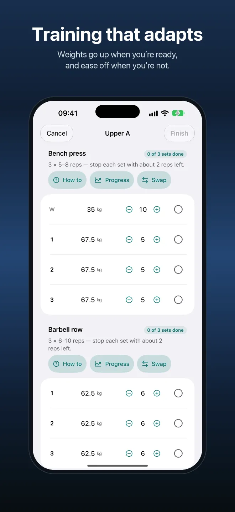
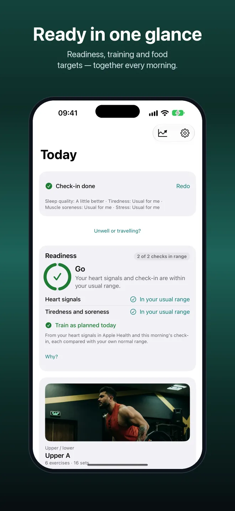
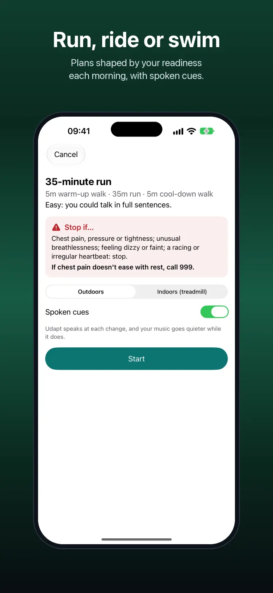
Your heart signals overnight and a four-question morning check-in, each compared with your own normal, never with other people's. No score out of 10, because no study gives one.
Weights go up when you're ready. A rough morning means fewer sets and a lighter effort, with the original session one tap away. Flag a shoulder, knee or lower back and exercises that load it are swapped like-for-like.
A nine-week run/walk plan, running towards a goal or a race from 5K to marathon, easy rides, and pool or open-water swims, fitted around your strength training at your level.
Gym, home (from dumbbells to a multi-gym), resistance bands, a hotel gym or just the floor: pick it for each session, at Beginner, Intermediate or Experienced.
The same calorie target every day, protein first. After a month of logging, Udapt learns what your body really burns. Log by search, barcode, or a photo or your voice with on-device AI.
Tap Why? for what changed and the research behind the rule, labelled by how directly it applies. No black box.
Swipe through the real app.
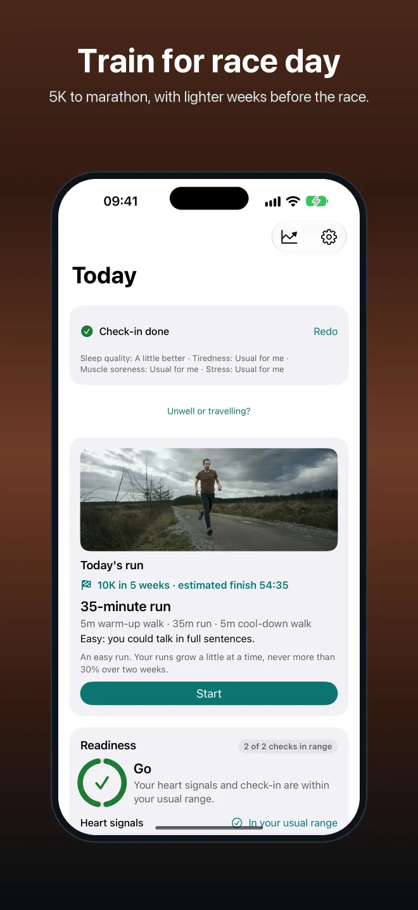
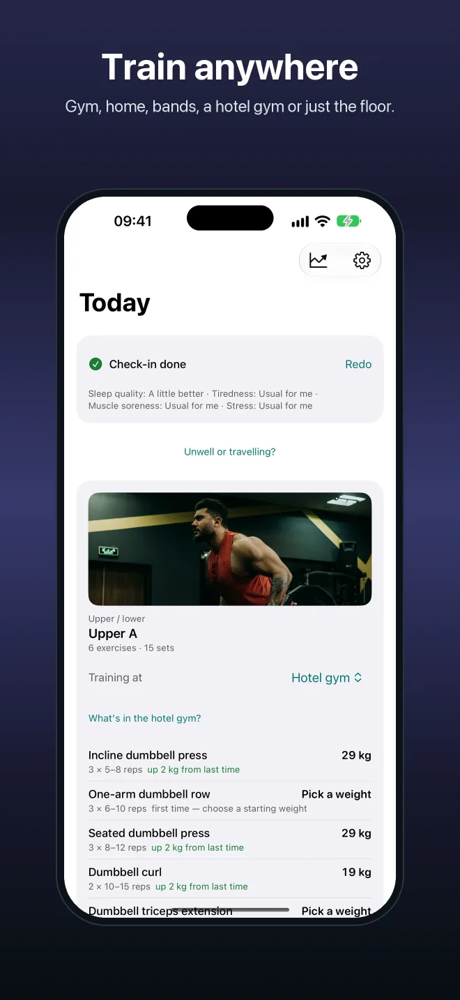
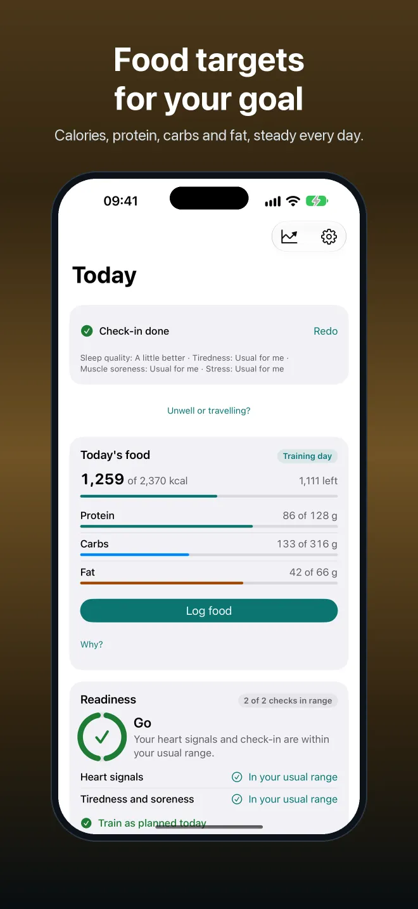
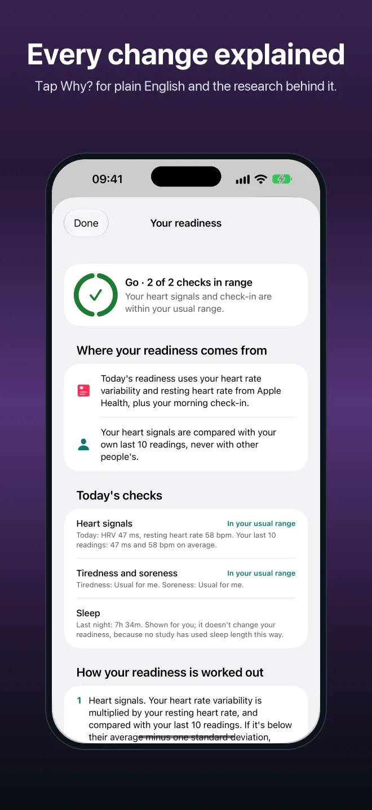
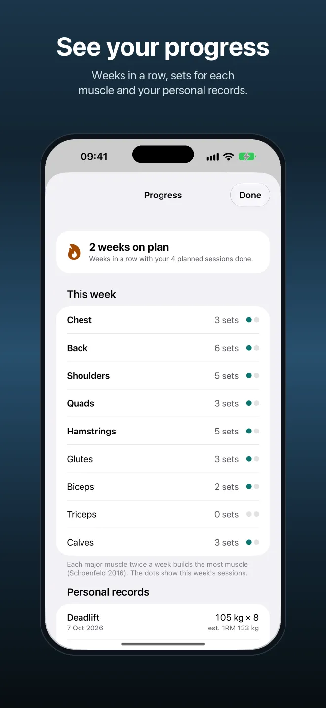
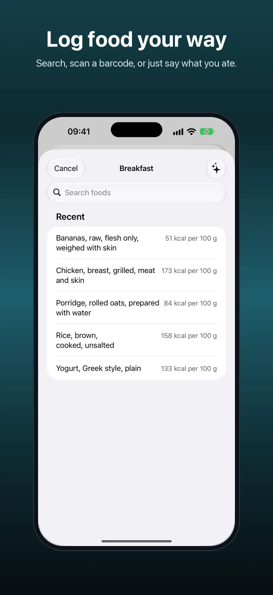
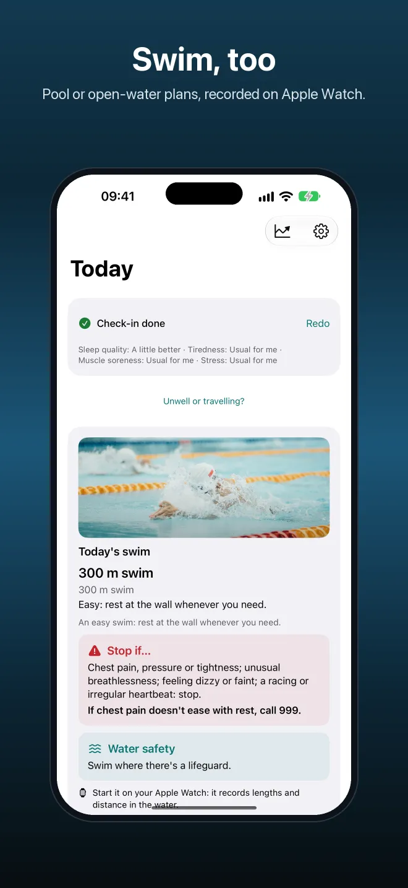
Pricing: Udapt is a subscription: £6.99/month or £39.99/year, with a 7-day free trial on both plans.
Good to know: Udapt is a wellness tool, not a medical device, and doesn't diagnose or treat anything. Always talk to your doctor about what's safe for you, especially around injuries.
Udapt has its own website, with full pricing, privacy and support information.
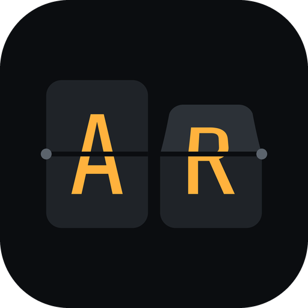
See what you're flying over, and what's flying over you. Landmarks named below your plane, Pilot View ahead, and every aircraft overhead on the ground.
Your GLP-1 journey, tracked privately. Doses, dose steps, injection sites, weight and side effects for Mounjaro, Wegovy, Ozempic and more.